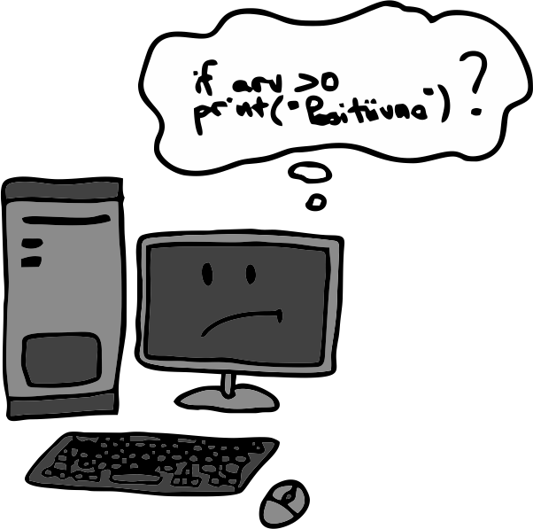

Kindlasti oled märganud, et kui teed mõne trükivea koodi kirjutades või üritad avada faili, mida pole olemas, siis
lõpetab programm oma töö veateatega. Selles peatükis uurime täpsemalt, milliseid vigu on olemas ja kuidas tagada, et programm
töötaks ka olukordades, kus võib mõni viga tekkida.
Milliseid vigu on olemas?
Süntaksivead
Programmeerimisega alustades on kõige tüüpilisemad süntaksivead. Süntaksivea puhul ei suuda arvuti kirjutatud
koodist aru saada. Tüüpiliselt on siis mõni taane või koolon puudu, mõni võtmesõna valesti kirjutatud, sõne ümbert on unustatud jutumärgid jne.
Allolevas näites oleme unustanud tingimuslause sisu taandega kirjutada.
Traceback (most recent call last):
File "C:\Users\AppData\Local\Programs\Thonny\lib\ast.py", line 35, in parse
return compile(source, filename, mode, PyCF_ONLY_AST)
File "C:\Users\test.py", line 3
print("Positiivne arv")
^
IndentationError: expected an indented block
Võtmesõnale if (ning ka paljudele teistele, näiteks tsüklitele) peab alati järgnema vähemalt üks taandega rida.
Kui sellist rida pole, siis on tegemist IndentationErrori ehk taandeveaga. Veateade ütleb meile, millisel real viga on (line 3) ja kuvab meile ka selle rea
(print("Positiivne arv")). See teeb meie jaoks nende vigade leidmise ja parandamise kõvasti lihtsamaks.
Traceback (most recent call last):
File "C:\Users\test.py", line 2
if arv > 0
^
SyntaxError: invalid syntax

Kui aga unustame näiteks kooloni või kirjutaksime if asemel hoopis iff,
siis saame üldise nimega süntaksivea SyntaxError, mis ütleb meile lihtsalt, et süntaksiga on probleem. Väikse noolekesega näidatakse ka
real ära, kus täpselt viga tekkis. Antud juhul tekkis viga rea lõpus, seal, kus peaks olema koolon.
Erindid
Programmi töö käigus võib ette tulla ka igasuguseid muid vigu. Näiteks kui proovida teisendada sõnet, mis sisaldab tähti, täisarvuks. Või kui
avada faili, mida ei ole olemas, või ka näiteks jagada mingit arvu nulliga (see pole matemaatikas võimalik). Samuti kui mõnes muutuja või funktsiooni nimes oleme
programmi kirjutades vea teinud ja selle tulemusena üritame kasutada muutujat või funktsiooni, mida pole olemas. Selliste vigade puhul programm küll käivitub, kuid kui
töö käigus tekib viga, siis lõpetab oma töö veateatega. Neid programmi töö käigus tekkivaid vigasid nimetatakse erinditeks.
Järgmises näites on ununenud v-täht muutuja arv lõpust.
Sisesta arv: 7 Traceback (most recent call last):
File "C:\Users\test.py", line 2, in <module>
print(ar)
NameError: name 'ar' is not defined
Veateade ütleb meile, et tegemist on NameErroriga. Täpsemalt, et sellist nime pole programmis defineeritud.
Kui proovime teisendada sõnet, mis ei koosne numbritest, täisarvuks, siis saame järgmise vea:
Traceback (most recent call last):
File "C:\Users\test.py", line 1, in <module>
arv = int("Tere!")
ValueError: invalid literal for int() with base 10: 'Tere!'
Selline veateade ütleb, et väärtusega oli mingi probleem. Täpsemalt, et väärtust "Tere!" ei
saa täisarvuks teisendada.
Kuidas erindeid kinni püüda?
Tüüpiliselt me tahame, et meie programm töötaks igas olukorras hästi ja soovime vältida olukordi, kus programm veateatega oma töö lõpetab.
Me saame küll ise teha omalt poolt kõik, et programmi vigu sisse ei jääks, aga kuna meie programm suhtleb tihtipeale ka kasutajaga, siis on alati võimalus, et
kasutaja sisestab midagi valesti. Näiteks kui küsime kasutajalt täisarvu, aga ta sisestab hoopis mingi teksti. Kui proovime kasutaja sisendit täisarvuks teisendada,
võime saada vea. Õnneks on programmeerimiskeeltes võimalik sellistes veaohtlikes kohtades tekkivad vead kinni püüda ja nendele reageerida.
Pythonis koosneb erindi püüdmine ja sellele reageerimine kahest plokist: try ja except.
Try-plokki kirjutatakse need koodiread, kus võib erind tekkida ja except-plokis on need koodiread, mida tahame
täita, kui try-plokis tekib erind. Except-ploki kohta võime öelda ka püünis.
Näiteks võime püünises kasutajale teada anda, et tema sisestatud väärtus ei sobi ja paluda tal uus väärtus sisestada või määrata ise mingi vaikeväärtus.
Nagu paljude konstruktsioonide puhul, siis tuleb ka siin kumbagi plokki kuuluvad read kirjutada taandega.
Sisesta arv: kolm Sisestatud väärtus ei ole täisarv! Vaikimisi määratakse arvuks 1. Sisestatud arv on: 1
Kui muidu oleks meie programm ebakorrektse sisendi peale veateatega lõpetanud, siis nüüd saame tekkivale veale reageerida ja programmiga edasi minna.
Soovi korral saame except-plokile ette anda, mis tüüpi vigu ta peab kinni püüdma (eelmises näites püüti kõiki erindeid). Sellisel juhul võime lisada ka mitu
except-plokki üksteise järele, mis püüavad kinni erinevat tüüpi vigu. Näiteks järgmises koodijupis püüab esimene püünis täisarvuks teisendamise vigu ehk
ValueErroreid ja teine püünis nulliga jagamise vigu ehk ZeroDivisionErroreid. Tasub veel mainida, et kohe kui
try-plokis tekib viga, siis ülejäänud ridu, mis try-plokis on, ei täideta. Minnakse hoopis kohe sobivat püünist otsima.
Näited programmi tööst erinevate sisenditega:
Sisesta lugeja: üks Sisestatud arv ei ole täisarv!
Sisesta lugeja: 9 Sisesta nimetaja: 0 Nimetaja ei tohi olla 0!
Sisesta lugeja: 9 Sisesta nimetaja: 2 Tulemus on: 4.5
Ühe püünise jaoks saab täpsustada ka mitu veatüüpi, mida ta püüdma peab. Need lisatakse siis sulgudesse ja komaga eraldatult.
Kui erindi jaoks sobivat püünist ei ole, siis lõpetab programm ikkagi veateatega töö:
Sisesta lugeja: 9 Sisesta nimetaja: 0 Traceback (most recent call last):
File "C:\Users\test.py", line 4, in <module>
print("Tulemus on: " + str(lugeja / nimetaja))
ZeroDivisionError: division by zero
Tsüklis väärtuse küsimine
Eelmistes näidetes väljastasime kasutajale, et sisestatud arv ei sobi, aga veel kasulikum oleks kasutajalt arvu lihtsalt uuesti küsida. Muidugi on alati võimalus,
et kasutaja sisestab ka teisel korral ebasobiva väärtuse, seepärast on sisendi küsimist kõige parem teha tsüklis. Tsüklis küsitakse sisendit nii kaua, kuni saame sobiva sisendi, mille korral enam erindit ei teki.
Kui sisendi teisendamisel arvuks tekib erind, siis ülejäänud try-ploki ridasid ei täideta, vaid minnakse
püüniste juurde. Kui viga ei teki, siis täidetakse try-ploki ridu edasi ja jõutakse break-käsuni.
Sisesta arv: üks Sisestatud arv ei ole täisarv! Sisesta arv: kaks Sisestatud arv ei ole täisarv! Sisesta arv: 8 Sisestatud arv on: 8
Sama loogikat saab kasutada ka faili nime küsimisel. Kui faili avamisel tekib erind, siis küsitakse kasutajalt nime uuesti:
Erindite püüdmise hea praktika
Erindite püüdmisel on paar kuldreeglit, millest tasub kinni pidada. Esiteks on hea püüda kinni kindlat sorti vigu ehk täpsustada püünises veatüüp, mida soovime kinni püüda.
Kui me ei täpsusta veatüüpi, siis võib juhtuda, et püütakse kinni ka erindid, mida me tegelikult ei taha kinni püüda. Näiteks kui oleme try-plokis
teinud vea muutuja nimetamises ja tekib NameError-erind, siis me tahaksime seda veateadet näha, et saaksime oma koodi parandada.
Selles näites püüame kinni kõik vead, ilma veatüüpi täpsustamata:
Sisesta arv: 5 Sisestatud arv ei ole täisarv!
Tegelikult oli sisestatud arv küll täisarv, viga tekkis hoopis järgmisel real, kus proovisime seda arvu väljastada. Kuna aga püünis püüab kinni kõik tekkivad erindid, siis
jääb siin ekslikult mulje, et sisestatud arvuga oli probleem. Palju parem on täpsustada veatüüp, siis saame kohe tagasisidet, kui tekib mõni teist sorti erind, mida korrektse
koodi korral ei peaks tekkima:
Sisesta arv: 5 Traceback (most recent call last):
File "C:\Users\krist\OneDrive\Documents\Ylikool\magistritoo\test.py", line 3, in <module>
print("Sisestatud arv on: " + str(ar))
NameError: name 'ar' is not defined
Teine hea praktika on panna try-plokki ainult need read, kus võib viga tekkida. Kogu muu kood peaks olema väljaspool
try-except-plokki. Siin võib aga tekkida küsimus, et kuhu peaks panema need read, mida tahame täita siis, kui viga ei teki? Me ei saa neid alati panna
lihtsalt pärast try-except-plokki, sest kui try-plokis tekkis viga, siis ei pruugi meil olla kõiki muutujaid ja väärtusi,
mida tahame kasutada:
Sisesta arv: neli Sisestatud arv ei ole täisarv!
Traceback (most recent call last):
File "C:\Users\test.py", line 5, in <module>
print("Sisestatud arv on: " + str(arv))
NameError: name 'arv' is not defined
Siinkohal tuleb appi üks lisaplokk, mille saame try-exceptile veel otsa lisada. Selle ploki nimi
on else, täpselt sama nagu tingimuslause puhul. Try-except-else puhul pannakse
else-plokki see kood, mida tahetakse täita, kui try-plokis viga ei tekkinud.
Else-harus tekkivaid erindeid enam kinni ei püüta.
Sisesta arv: 5 Sisestatud arv on: 5
Sisesta arv: neli Sisestatud arv ei ole täisarv!
Kuidas erindeid tõstatada?
Seni vaatasime, kuidas erindeid kinni püüda. Soovi korral saame neid ka ise tekitada ehk tõstatada.
Erindi tõstatamiseks kasutatakse võtmesõna raise, millele järgneb veatüüp, mida tahame tõstatada.
Näiteks võime kirjutada funktsiooni, mis küsib kasutajalt täisarvulist sisendit, mis peaks olema 1 ja 10 vahel. Kui sisend ei ole
soovitud vahemikus, siis tõstatame erindi ValueError:
Katsetame funktsiooni kõigepealt ilma erindeid kinni püüdmata:
Sisesta täisarv vahemikus 1-10: 12 Traceback (most recent call last):
File "C:\Users\test.py", line 7, in <module>
arv = täisarvu_küsimine()
File "C:\Users\test.py", line 4, in täisarvu_küsimine
raise ValueError
ValueError
Näeme, et tekkis erind ValueError ja näeme, mis real, aga täpsemat infot meil ei ole, et mis probleem seal siis täpselt oli.
Saame aga soovi korral erindit tõstatades ka sõnumi kaasa anda. See käib sõnena erindi tüübi järele sulgudesse:
Sisesta täisarv vahemikus 1-10: 12 Traceback (most recent call last):
File "C:\Users\test.py", line 7, in <module>
arv = täisarvu_küsimine()
File "C:\Users\test.py", line 4, in täisarvu_küsimine
raise ValueError("vahemik peab olema 1-10")
ValueError: vahemik peab olema 1-10
Põhikoodis võime funktsiooni väljakutse panna try-excepti sisse ja püüda tekkivad ValueErrorid kinni:
Sisesta täisarv vahemikus 1-10: 12 Sisestatud arv ei ole täisarv vahemikus 1-10!
Harjutused
Pitsatainas
Võtame jälle ette funktsioonide peatükist tuttava pitsataigna koguse arvutamise funktsiooni:
Kirjuta funktsioon ümber nii, et kui argumendiks antud läbimõõt ei ole 20, 28 või 38, siis
tõstataks funktsioon ValueErrori. Põhiprogrammis peaks programm kasutajalt küsima pitsa läbimõõdu ja siis väljastama
vajaliku taignakoguse. Kui kasutaja sisend ei ole täisarv või funktsiooni väljakutses tekib viga, siis peaks kasutajat sellest teavitama ja programm peaks oma töö lõpetama.
Sisesta pitsa läbimõõt: täisarv Sisend ei ole 20, 28 ega 38!
Sisesta pitsa läbimõõt: 25 Sisend ei ole 20, 28 ega 38!
Koolis korraldati spordipäeva ja paralleelklassidevahelist teatejooksu. Võitnud klasside nimed on kirjutatud faili.
Nüüd tahab kool võitnud klassides igale õpilasele väikse kingituse teha. Kirjuta programm, mis loeks failist klasside nimed ja küsiks kasutajalt mitu õpilast selles klassis on.
Lõpus peaks programm väljastama, mitu kingitust tuleb kokku teha. Faili nimi tuleks küsida kasutajalt ja kui sellise nimega faili ei õnnestu avada, tuleks faili nime uuesti küsida,
kuni kasutaja sisestab korrektse nime. Ka klassis õppivate õpilaste arvu küsides peaks programm kasutajalt sisendit küsima seni, kuni kasutaja sisestab täisarvu.
Näide faili sisust:
1A 2D 3A 4A 5C 6B
Näide programmi tööst:
Sisesta teatejooksu tulemuste faili nimi: tulemused.txt Sellist faili ei õnnestu avada! Sisesta teatejooksu tulemuste faili nimi: teatejooks.txt Mitu õpilast on 1A klassis? 20 Mitu õpilast on 2D klassis? 21e Vigane arv! Mitu õpilast on 2D klassis? aa21 Vigane arv! Mitu õpilast on 2D klassis? 21 Mitu õpilast on 3A klassis? 19 Mitu õpilast on 4A klassis? ei tea Vigane arv! Mitu õpilast on 4A klassis? 17 Mitu õpilast on 5C klassis? 15 Mitu õpilast on 6B klassis? 20 Kokku on vaja teha 112 kingitust.